THE EDUCATIONAL SECTOR SURROUNDING AND WITHIN NANGERE
The Federal College Of Education (Technical), Potiskum
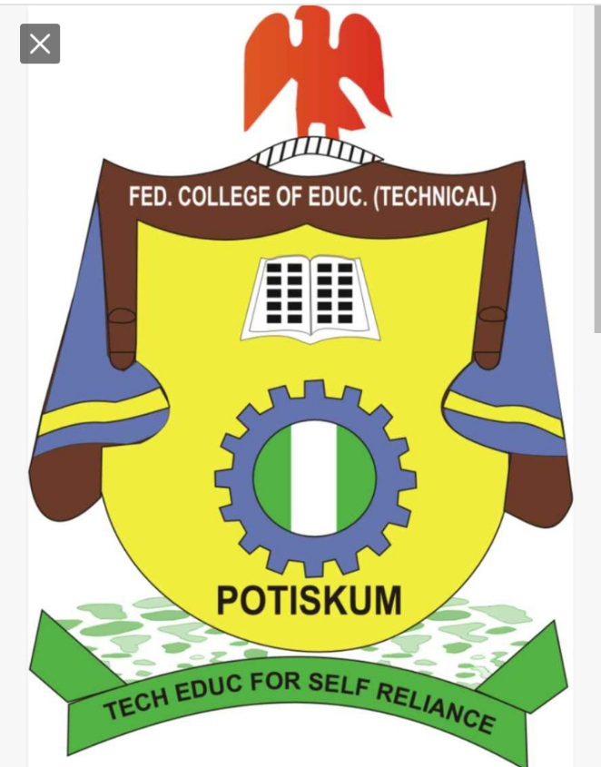The Federal College of Education (Tech), Potiskum was established in 2005 by the federal Government of Nigeria to address the shortage of teachers in technical and vocational education. The institution began in a temporary site, and operations commenced on the 5th of December, 2005 with 186 students admitted into its Foundation (pre-NCE) programme. In 2006, the first batch of students were admitted into the NCE programmes in Technical Education and Vocational Education.
In 2008, the college moved to its permanent site along Potiskum-Gombe Road. The college held its first convocation ceremony 6th November,2010
and graduated a total of 548 students from various programmes.
For more info FCE(TECH),POSTISKUM
Sabon Garin Nangere Central Primary School
Sabon Gari Nangere Primary School was established in the year 1994 with only one classroom which contain more than 30 pupils.
The school was situated at Gidan Baki opposite to Mallam Bali Zarma’s House.
 Malam Baba Hardo was the first headmaster and the only class teacher too during that time.
In 1975, the school was relocated to its permanent site where two classrooms were built with mould.
In 1976, more classrooms were constructed with additional teachers. Late Malam Isah Jama’are was the Arabic Teacher.
In 1976, the school has primary one, two and three. During that era, houses were formed for inspection every Monday, namely Talba House, Ramot House, Tafawe Balewa House and Sardauna House
under the leading of house captains and their assistant.
In 1979, the school has the school garden which was supervised by the Garden Master and Garden Prefect to ensure adequate watering of plants.
The school produced the first set of Secondary School Pupils in 1980 after Common Entrance Examination and Interviews.
The school produces top government officers, some are retirees, among them is the former Nangere Local Government Chairman Hon. Salisu Yarima,
Former Education Secretary Nangere Local Government Education Authority Malam Adamu Talba Liba (Kachallan Tikau),
Former Local Government Secretary Adamu Salisu, present North-East controller NDIC Bauchi and H.R.H Emir of Tikau Alhaji Abubakar Muhammadu Ibn Grema.
In 1980, the school formed Parents Teachers Association (P.T.A). Presently the school has P.T.A , S.B.M.C and also runs a Primary and Early Child Care Development Education (ECCDE)
with total enrollment of 1135 pupils, 17 permanent staffs and a volunteer staff with 18 classes, 2 offices, 1 store, 1 library, 3 toilets and 1 ECCDE centre
Malam Baba Hardo was the first headmaster and the only class teacher too during that time.
In 1975, the school was relocated to its permanent site where two classrooms were built with mould.
In 1976, more classrooms were constructed with additional teachers. Late Malam Isah Jama’are was the Arabic Teacher.
In 1976, the school has primary one, two and three. During that era, houses were formed for inspection every Monday, namely Talba House, Ramot House, Tafawe Balewa House and Sardauna House
under the leading of house captains and their assistant.
In 1979, the school has the school garden which was supervised by the Garden Master and Garden Prefect to ensure adequate watering of plants.
The school produced the first set of Secondary School Pupils in 1980 after Common Entrance Examination and Interviews.
The school produces top government officers, some are retirees, among them is the former Nangere Local Government Chairman Hon. Salisu Yarima,
Former Education Secretary Nangere Local Government Education Authority Malam Adamu Talba Liba (Kachallan Tikau),
Former Local Government Secretary Adamu Salisu, present North-East controller NDIC Bauchi and H.R.H Emir of Tikau Alhaji Abubakar Muhammadu Ibn Grema.
In 1980, the school formed Parents Teachers Association (P.T.A). Presently the school has P.T.A , S.B.M.C and also runs a Primary and Early Child Care Development Education (ECCDE)
with total enrollment of 1135 pupils, 17 permanent staffs and a volunteer staff with 18 classes, 2 offices, 1 store, 1 library, 3 toilets and 1 ECCDE centre
Recent Developments (2000-present):
In recent Years, the school has faced challenges, including:
[1] Limited resources and infrastucture
[2] Increased enrollment due to population growth.
Despite these challenges, the school remains a vital institution in Nangere, Providing basic education to hundreds of pupils.
Notable Achievements:
[1] Producing notable alumni, including politians, educators, and entrepreneurs.
[2] Participating in national and state-level competitions.
[3] Collaborating with international organizations for educational development.
 The Front View Of Sabon Garin Nangere Primary School
The Front View Of Sabon Garin Nangere Primary School
Government Day Junior Secondary School, Sabon Garin, Nangere (GDJSS)
Governmnent Day Junior Secondary School, Sabon Garin, Nangere was established in 30-1-2006 with a population of 150 students, three teachers
including the principal and seven corp members with three classrooms. The Uniform for boys is blue check with a navy blue trouser, girls
put on blue check with a anvay blue hijab.
The school closing ours from then till day is from 7:30am to 12:30pm. The First Principal of the school was Malam Abdullahi Abari.
 The Front View Of Government Day Junior Secondary School, Sabon Garin, Nangere (GDJSS)
The Front View Of Government Day Junior Secondary School, Sabon Garin, Nangere (GDJSS)
Recent Developments (2006-present):
In recent Years, the school has faced challenges, including:
[1] Limited resources and infrastucture
[2] Increased enrollment due to population growth.
Despite these challenges, the school remains a vital institution in Nangere, Providing basic education to hundreds of pupils.
Notable Achievements:
[1] Producing notable alumni, including politians, educators, and entrepreneurs.
[2] Participating in national and state-level competitions.
[3] Collaborating with international organizations for educational development.
These are images of the pass corp members that have served with Governmnent Junior Secondary School


These are the images of Corp Member raising awareness to student on careers...Explain to them what they need to do to become someone
great in the community and to help develop Sabon Garin, Nangere, Yobe State.


 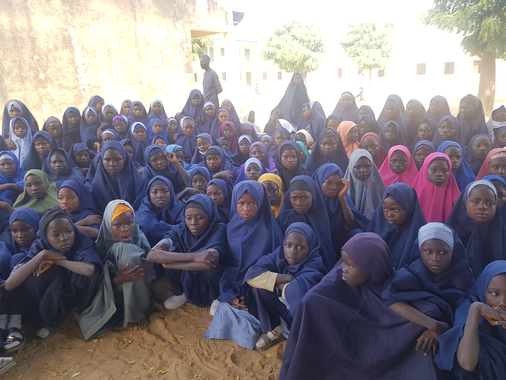
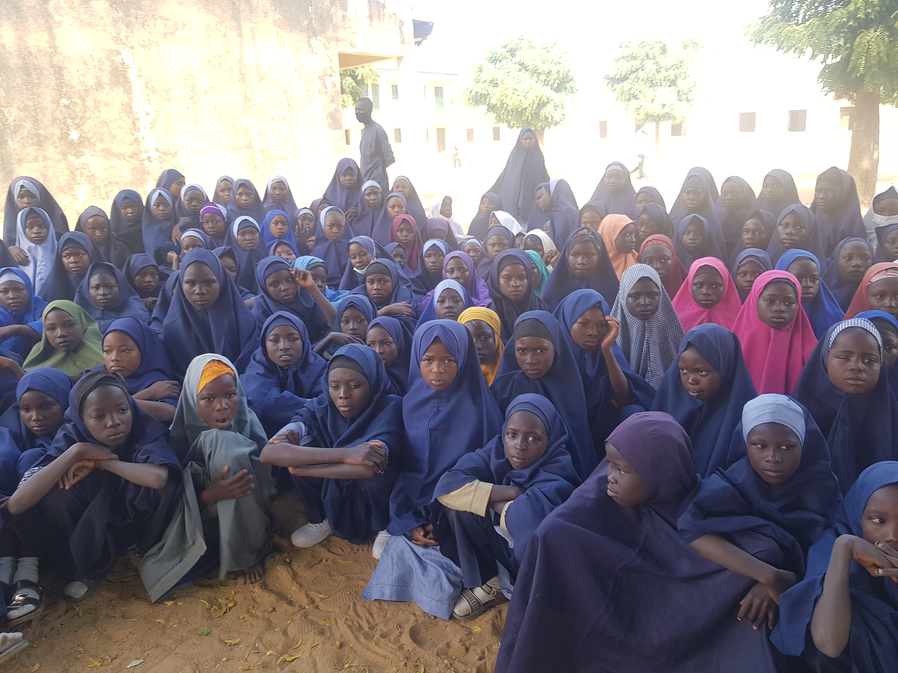
 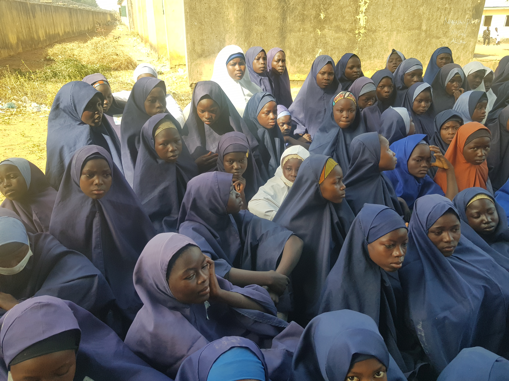
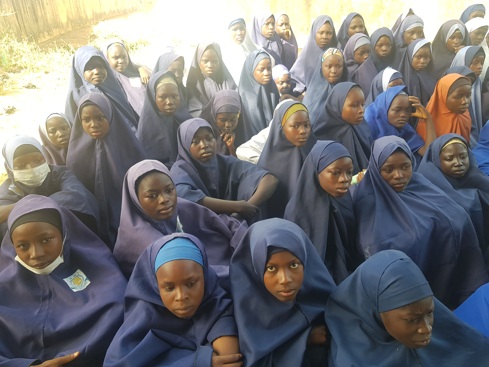
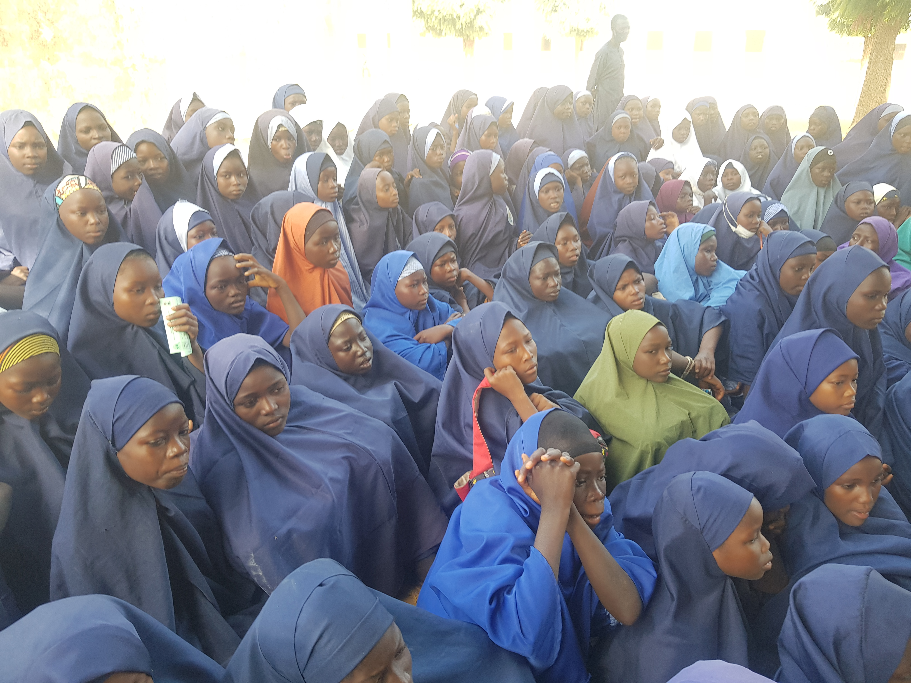
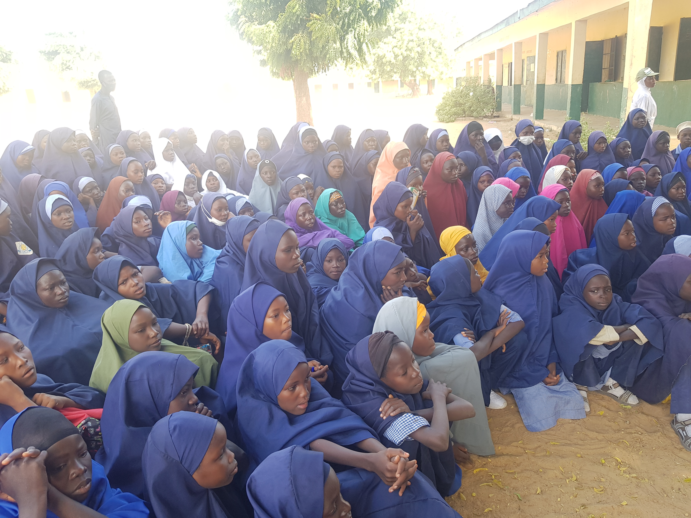
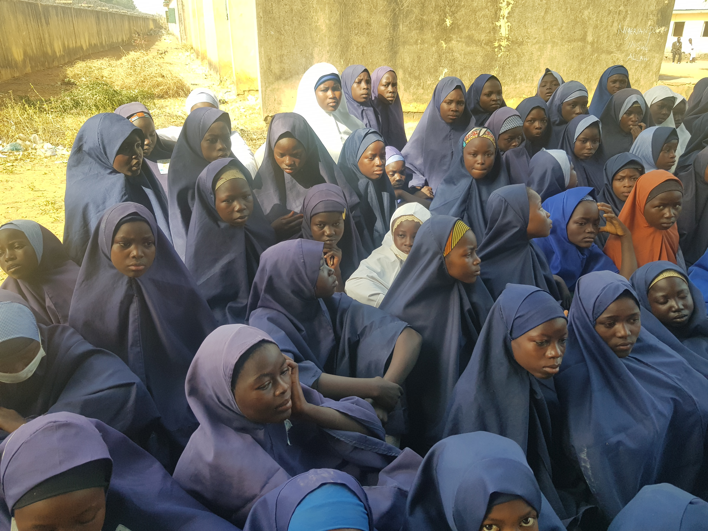
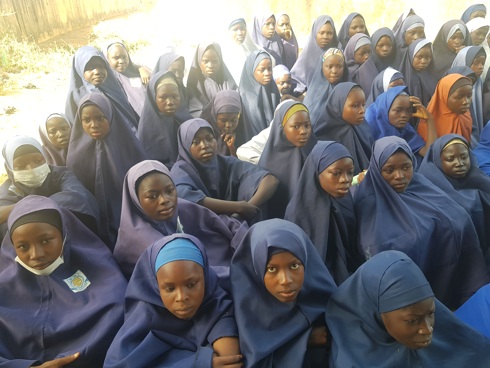
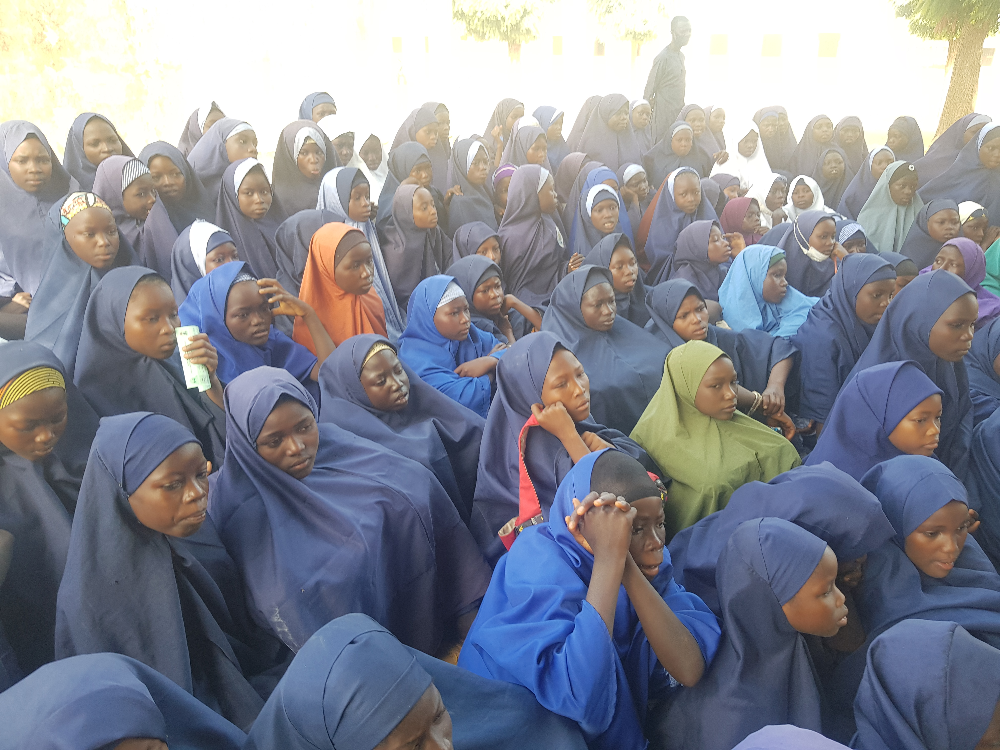
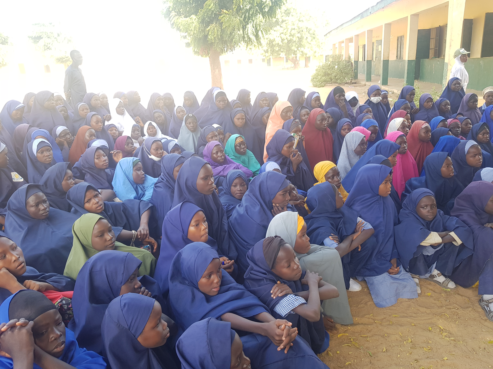

 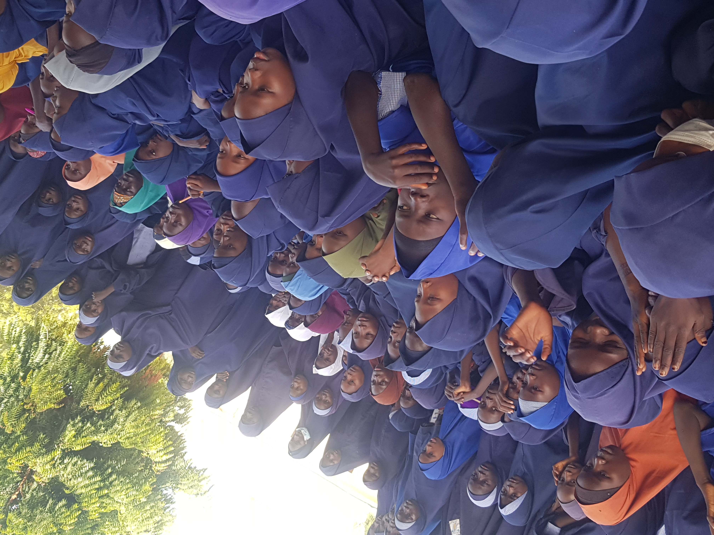
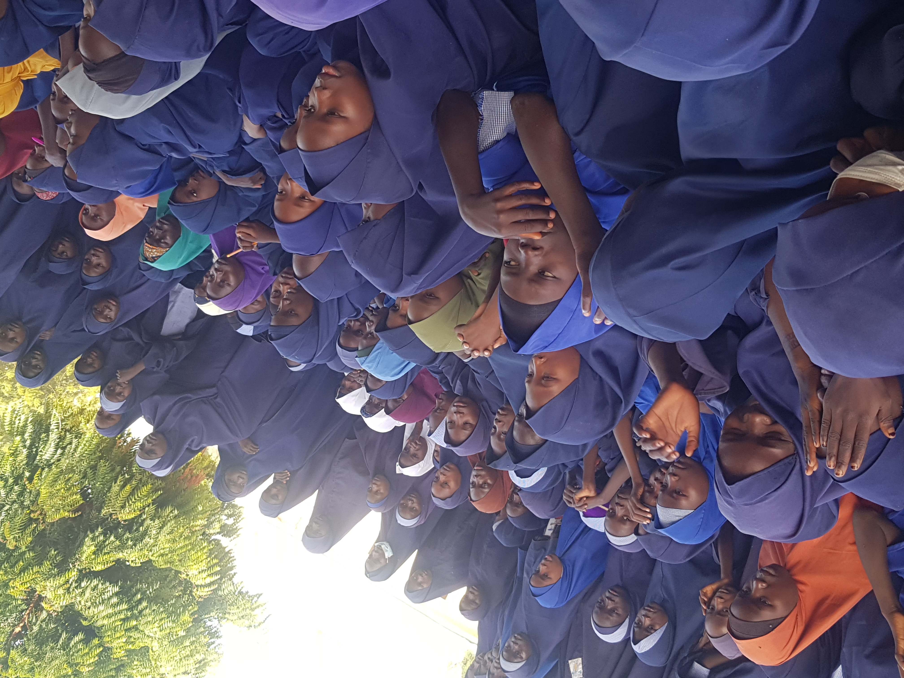
Government Girls Day Senior Secondary School, Sabon Garin, Nangere (GGDSSS)
Government Girls Day Secondary School, Nangere was established in 2013 by his Excellency, the Executive Governor of Yobe State State, Alhaji
Mai Mala Buni.
 The Front View of Government Girls Day Senior Secondary School
The Front View of Government Girls Day Senior Secondary School
The school started with six (6) SS1 Students, Five (5) Academic staff, Two (2) vice Principal and A principal with Tolatal classroom of
five.
Presently, the school has a population of more than two hundred (200) students, Twenty three(23) Academic staff and three(3) Non-academic
staff.
The school is temporarily located inside Sabon Garin Nangere Primary School Premises.
Despite these challenges, the school remains a vital institution in Nangere, Providing basic education to hundreds of pupils.
Notable Achievements:
[1] Producing notable alumni, including politians, educators, and entrepreneurs.
[2] Participating in national and state-level competitions.
[3] Collaborating with international organizations for educational development.
These are images took when the National Orientation Agency visited the school to enlighten them and create awareness to the girls.


These are the images of Corp Member raising awareness to student on careers...Explain to them what they need to do to become someone
great in the community and to help develop Sabon Garin, Nangere, Yobe State.


These are images of the student participating in debate competition among themselves